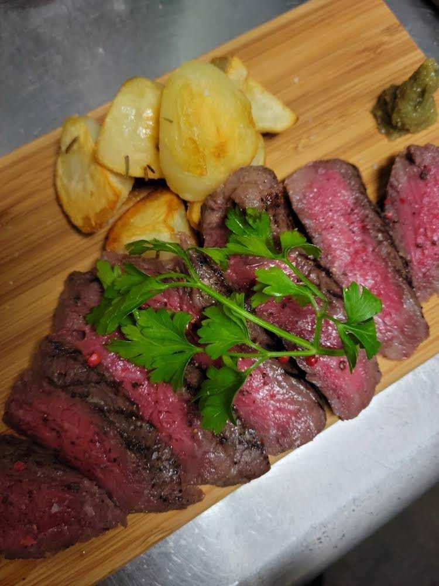

イタリアン CIT へようこそ
ワインの専門家はいません。
自分達が「美味しい」と思ったワインだけをご用意しております。
旬の食材を使ったコスパ最高の美味しい料理と、厳選したワインをご提供。
都田沼駅より徒歩2分とアクセス抜群！お仕事帰りや大切なパートナー、女子会、記念日、ひとり飲みまで様々なシーンでお気軽にご利用ください。
※衛生対策は万全。いつも笑顔が溢れる明るい店内で初めての方もお待ちしております。
CITの三大名物

国産牛ステーキ（イチボ）
赤身の旨味と霜降りの甘みが絶妙な希少部位。ワインとの相性も抜群の看板メニューです。

オーナーシェフ厳選チーズ
ワイン好きにはたまらない絶品チーズ料理を豊富にご用意。とろける濃厚な味わいをお楽しみください。

日替わりグラスワイン
580円〜
オーナーが本当に美味しいと思ったワインだけを厳選。ボトルワインも各種取り揃えています。
店舗情報・ご案内
| 店名 | イタリアン CIT （シーアイティ） |
|---|---|
| 住所 | 〒999-999 奈良氏之市都田沼１２３（都田沼駅より徒歩2分） |
| 電話番号 | 000-1234-5678 |
| 貸切・サプライズ |
・8名様以上の貸切は定休日でもお気軽にお電話でご相談ください。 ・誕生日のサプライズも大歓迎！ケーキの持ち込みも可能です。 |